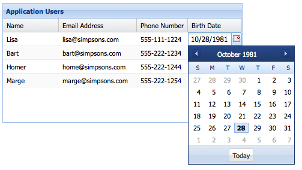
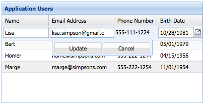
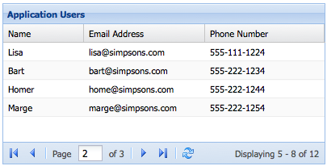

Grids
Many classes have shortcut names used when creating (instantiating) a class with a
configuration object. The shortcut name is referred to as an alias (or xtype if the
class extends Ext.Component). The alias/xtype is listed next to the class name of
applicable classes for quick reference.
Framework classes or their members may be specified as private or protected. Else,
the class / member is public. Public, protected, and private are access
descriptors used to convey how and when the class or class member should be used.
Public classes and class members are available for use by any other class or application code and may be relied upon as a stable and persistent within major product versions. Public classes and members may safely be extended via a subclass.
Protected class members are stable public members intended to be used by the
owning class or its subclasses. Protected members may safely be extended via a subclass.
Private classes and class members are used internally by the framework and are not intended to be used by application developers. Private classes and members may change or be omitted from the framework at any time without notice and should not be relied upon in application logic.
static label next to the
method name. *See Static below.Below is an example class member that we can disect to show the syntax of a class member (the lookupComponent method as viewed from the Ext.button.Button class in this case).
Let's look at each part of the member row:
lookupComponent in this example)( item ) in this example)Ext.Component in this case). This may be omitted for methods that do not
return anything other than undefined or may display as multiple possible values
separated by a forward slash / signifying that what is returned may depend on the
results of the method call (i.e. a method may return a Component if a get method calls is
successful or false if unsuccessful which would be displayed as
Ext.Component/Boolean).PROTECTED in
this example - see the Flags section below)Ext.container.Container in this example). The source
class will be displayed as a blue link if the member originates from the current class
and gray if it is inherited from an ancestor or mixed-in class.view source in the example)item : Object in the example).undefined a "Returns" section
will note the type of class or object returned and a description (Ext.Component in the
example)Available since 3.4.0 - not pictured in
the example) just after the member descriptionDefaults to: false)The API documentation uses a number of flags to further commnicate the class member's function and intent. The label may be represented by a text label, an abbreviation, or an icon.
classInstance.method1().method2().etc();false is returned from
an event handler- Indicates a framework class
- A singleton framework class. *See the singleton flag for more information
- A component-type framework class (any class within the Ext JS framework that extends Ext.Component)
- Indicates that the class, member, or guide is new in the currently viewed version
- Indicates a class member of type config
- Indicates a class member of type property
- Indicates a class member of type
method
- Indicates a class member of type event
- Indicates a class member of type
theme variable
- Indicates a class member of type
theme mixin
- Indicates that the class, member, or guide is new in the currently viewed version
Just below the class name on an API doc page is a row of buttons corresponding to the types of members owned by the current class. Each button shows a count of members by type (this count is updated as filters are applied). Clicking the button will navigate you to that member section. Hovering over the member-type button will reveal a popup menu of all members of that type for quick navigation.
Getting and setter methods that correlate to a class config option will show up in the methods section as well as in the configs section of both the API doc and the member-type menus just beneath the config they work with. The getter and setter method documentation will be found in the config row for easy reference.
Your page history is kept in localstorage and displayed (using the available real estate) just below the top title bar. By default, the only search results shown are the pages matching the product / version you're currently viewing. You can expand what is displayed by clicking on the button on the right-hand side of the history bar and choosing the "All" radio option. This will show all recent pages in the history bar for all products / versions.
Within the history config menu you will also see a listing of your recent page visits. The results are filtered by the "Current Product / Version" and "All" radio options. Clicking on the button will clear the history bar as well as the history kept in local storage.
If "All" is selected in the history config menu the checkbox option for "Show product details in the history bar" will be enabled. When checked, the product/version for each historic page will show alongside the page name in the history bar. Hovering the cursor over the page names in the history bar will also show the product/version as a tooltip.
Both API docs and guides can be searched for using the search field at the top of the page.
On API doc pages there is also a filter input field that filters the member rows using the filter string. In addition to filtering by string you can filter the class members by access level, inheritance, and read only. This is done using the checkboxes at the top of the page.
The checkbox at the bottom of the API class navigation tree filters the class list to include or exclude private classes.
Clicking on an empty search field will show your last 10 searches for quick navigation.
Each API doc page (with the exception of Javascript primitives pages) has a menu view of metadata relating to that class. This metadata view will have one or more of the following:
Ext.button.Button class has an alternate class name of Ext.Button). Alternate class
names are commonly maintained for backward compatibility.Runnable examples (Fiddles) are expanded on a page by default. You can collapse and expand example code blocks individually using the arrow on the top-left of the code block. You can also toggle the collapse state of all examples using the toggle button on the top-right of the page. The toggle-all state will be remembered between page loads.
Class members are collapsed on a page by default. You can expand and collapse members using the arrow icon on the left of the member row or globally using the expand / collapse all toggle button top-right.
Viewing the docs on narrower screens or browsers will result in a view optimized for a smaller form factor. The primary differences between the desktop and "mobile" view are:
The class source can be viewed by clicking on the class name at the top of an API doc page. The source for class members can be viewed by clicking on the "view source" link on the right-hand side of the member row.
Ext.grid.Panel is one of the centerpieces of ExtJS. It's an incredibly versatile component that provides an easy way to display, sort, group, and edit data.

Let's get started by creating a basic Ext.grid.Panel. Here's all you need to know to get a simple grid up and running:
Ext.grid.Panel is simply a component that displays data contained in a Ext.data.Store. Ext.data.Store can be thought of as a collection of records, or Ext.data.Model instances.
The benefit of this setup is separating our concerns. Ext.grid.Panel is only concerned with displaying the data, while Ext.data.Store takes care of fetching and saving the data using Ext.data.proxy.Proxy.
First, we need to define a Ext.data.Model. A model is just a collection of fields that represents a type of data. Let's define a model that represents a "User":
Ext.define('User', {
extend: 'Ext.data.Model',
fields: [ 'name', 'email', 'phone' ]
});
Next let's create a Ext.data.Store that contains several "User" instances.
var userStore = Ext.create('Ext.data.Store', {
model: 'User',
data: [
{ name: 'Lisa', email: 'lisa@simpsons.com', phone: '555-111-1224' },
{ name: 'Bart', email: 'bart@simpsons.com', phone: '555-222-1234' },
{ name: 'Homer', email: 'homer@simpsons.com', phone: '555-222-1244' },
{ name: 'Marge', email: 'marge@simpsons.com', phone: '555-222-1254' }
]
});
For sake of ease, we configured Ext.data.Store to load its data inline. In a real world application, you would most likely configure the Ext.data.Store to use an Ext.data.proxy.Proxy to load data from the server.
Now, we have a model, which defines our data structure. We have also loaded several model instances into an Ext.data.Store. Now we're ready to display the data using Ext.grid.Panel.
In this example, we configured the Grid with renderTo to immediately render the Grid into the HTML document.
In many situations, the grid will be a descendant of Ext.container.Viewport, which means rendering is already handled.
Ext.create('Ext.grid.Panel', {
renderTo: document.body,
store: userStore,
width: 400,
height: 200,
title: 'Application Users',
columns: [
{
text: 'Name',
width: 100,
sortable: false,
hideable: false,
dataIndex: 'name'
},
{
text: 'Email Address',
width: 150,
dataIndex: 'email',
hidden: true
},
{
text: 'Phone Number',
flex: 1,
dataIndex: 'phone'
}
]
});
And that's all there is to it.
We just created an Ext.grid.Panel that renders itself to the body element. We
also told the Grid panel to get its data from the userStore that we previously
created.
Finally, we defined the Grid panel's columns and gave them a
dataIndex property. This dataIndex
associates a field from our model to a column.
The "Name" column has a fixed width of "100px" and has
sorting and
hiding disabled. The "Email Address"
column is hidden by default (it can be shown again by using the menu on any other column
header). Finally, the "Phone Number" column
flexes to fit the remainder of the Grid panel's
total width.
For a larger example, see the Basic Grid Example.
You can use the renderer property of the
column config to change the way in which data is displayed. A renderer is a function
that modifies the underlying value and returns a new value for display. Some of the
most common renderers are included in Ext.util.Format, but you can write your
own as well:
columns: [
{
text: 'Birth Date',
dataIndex: 'birthDate',
// format the date using a named method from the ViewController
renderer: 'renderDate',
},
{
text: 'Birth Date',
dataIndex: 'birthDate',
// format the date using a formatter from the Ext.util.Format class
formatter: 'date("m/d/Y")',
},
{
text: 'Email Address',
dataIndex: 'email',
// format the email address using a custom renderer
renderer: function(value) {
return Ext.String.format('<a href="mailto:{0}">{1}</a>', value, value);
}
}
]
See the Kitchen Sink's Basic Grid for a live demo that uses custom renderers.
In accordance with accessibility guidelines, grid cells accept focus, and the focus rendition my be specified in the theme.
Arrow keys navigate the focus position in two dimensions. TAB tabs out of the grid into the following focusable element.
This is known as Navigable Mode, and is the default mode for handling focus within a grid.
If there are focusable elements within a cell (Such as [[Ext.grid.column.ActionColumn action columns]] then the actionable items may be accessed by using the ENTER or F2 key to enter Actionable Mode wherin focus navigation takes place within cells using the TAB key.
Cell editing which is discussed below is a special case of Actionable Mode.
ESC or F2 exits actionable mode, and focus pops up to the encapsulating cell of the recently focused actionable item.
See https://www.w3.org/TR/wai-aria-practices/#grid for details.
Grid panels can be used to simply display data. However, it is often necessary to interact with the Grid's data. All Grid panels have an Ext.selection.Model, which determines how data is selected. The most versatile Selection Model is Ext.grid.selection.SpreadsheetModel, which may be configured to select cells, rows, or columns, and to optionally display a selection checkbox if selecting rows.
See the Kitchen Sink's Spreadsheet Model for an example.
Other selection models include Ext.selection.RowModel, where entire rows are selected, and Ext.selection.CellModel, where individual cells are selected. These are less flexible than the SpreadsheetModel.
Grid panels use Ext.selection.RowModel by default, but it's easy to switch to an Ext.grid.selection.SpreadsheetModel:
Ext.create('Ext.grid.Panel', {
selectionModel: 'spreadsheet',
store: ...
});
Grid panel has built-in support for editing. Let's look at the two main editing modes - row editing and cell editing.
Cell editing allows you to edit the data in a Grid panel one cell at a time. The first step in implementing cell editing is to configure an editor for each Ext.grid.column.Column in your Grid Panel that should be editable. This is done using the Ext.grid.column.Column#editor config. The simplest way is to specify just the xtype of the field you want to use as an editor:
Ext.create('Ext.grid.Panel', {
...
columns: [
{
text: 'Email Address',
dataIndex: 'email',
editor: 'textfield'
}
]
});
If you need more control over how the editor field behaves, the Ext.grid.column.Column#editor config can also take a config object for a Field. For example, if we are using a Ext.form.field.Text and we want to require a value:
columns: [
text: 'Name',
dataIndex: 'name',
editor: {
xtype: 'textfield',
allowBlank: false
}
[
You can use any class in the "Ext.form.field.*" package as an editor field. Lets suppose we want to edit a column that contains dates. We can use a Ext.form.field.Date editor:
columns: [
{
text: 'Birth Date',
dataIndex: 'birthDate',
editor: 'datefield'
}
]
Any Ext.grid.column.Column in a Ext.grid.Panel that do not have a ] configured will not be editable.
Now that we've configured which columns we want to be editable, to enable editing we need to configure the Ext.grid.Panel with a Ext.grid.plugin.CellEditing:
Ext.create('Ext.grid.Panel', {
...
plugins: [{
ptype: 'cellediting ',
clicksToEdit: 1
}]
});
And that's all it takes to create an editable Grid using cell editing. See Cell Editing for a working example.

Row editing enables you to edit an entire row at a time, rather than editing cell by cell. Row editing works in exactly the same way as cell editing - all we need to do is change the plugin type to Ext.grid.plugin.RowEditing.
Ext.create('Ext.grid.Panel', {
...
plugins: [{
ptype: 'rowediting',
clicksToEdit: 1
}]
});

See Row Editing for a working example.

Organizing the rows into groups is easy. First we specify a groupField property on our store:
Ext.create('Ext.data.Store', {
model: 'Employee',
data: ...,
groupField: 'department'
});
Next, we configure a Grid with Ext.grid.feature.Grouping that will handle displaying the rows in groups:
Ext.create('Ext.grid.Panel', {
...
features: [{ ftype: 'grouping' }]
});
See the Kitchen Sink's Grouping Grid Panel for a live example.
Sometimes your data set is too large to display all on one page. Ext.grid.Panel supports displaying individual pages from the dataset using a Ext.toolbar.Paging, which loads pages using previous/next buttons.
Before we can set up paging on a Ext.grid.Panel, we have to configure the Ext.data.Store to support paging. In the below example we add Ext.data.Store#pageSize to the Ext.data.Store, and we configure our Ext.data.reader.Reader with a Ext.data.reader.Reader#totalProperty:
Ext.create('Ext.data.Store', {
model: 'User',
autoLoad: true,
pageSize: 100,
proxy: {
type: 'ajax',
url : 'data/users.json',
reader: {
type: 'json',
rootProperty: 'users',
totalProperty: 'total'
}
}
});
The Ext.data.reader.Reader#totalProperty config tells Ext.data.reader.Json where to get the total number of results in the JSON response. This Ext.data.Store is configured to consume a JSON response that looks something like this:
{
"success": true,
"total": 4,
"users": [
{ "name": "Lisa", "email": "lisa@simpsons.com", "phone": "555-111-1224" },
{ "name": "Bart", "email": "bart@simpsons.com", "phone": "555-222-1234" },
{ "name": "Homer", "email": "homer@simpsons.com", "phone": "555-222-1244" },
{ "name": "Marge", "email": "marge@simpsons.com", "phone": "555-222-1254" }
]
}
Now that we've set up our Ext.data.Store to support paging, all that's left is to configure a Ext.toolbar.Paging. You could put the Ext.toolbar.Paging anywhere in your application layout, but typically it is docked to the Ext.grid.Panel:
Ext.create('Ext.grid.Panel', {
store: userStore,
columns: ...,
dockedItems: [{
xtype: 'pagingtoolbar',
store: userStore, // same store GridPanel is using
dock: 'bottom',
displayInfo: true
}]
});

See the Paging Grid for a working example.
Grids and Trees enable buffered rendering of extremely large datasets as an alternative to using a paging toolbar. Your users can scroll through thousands of records without the performance penalties of renderering all the records on screen at once.
Only enough rows are rendered to fill the visible area of the Grid with a little Ext.grid.Panel#cfg-leadingBufferZone overflow either side to allow scrolling. As scrolling proceeds, new rows are rendered in the direction of scroll, and rows are removed from the receding side of the table.
Grids use buffered rendering by default, so you no longer need to add the plugin to your Grid component.
See Big Data of Filtered Tree for working examples.
Since ExtJS 5.0, developers have had the ability to embed components within grid cells using the Widget Column class.
In versions prior to 6.2.0, components embedded in this way had no access to the grid's
Ext.app.ViewModel. The field referenced by the column's dataIndex was bound to
the component's defaultBindProperty.
In 6.2.0, components embedded in grids have access to the ViewModel and all the data within it. The ViewModel contains two row-specific properties:
record
recordIndex
Since ExtJS 6.2.0, developers have had the ability to configure a component to be displayed in an expansion row below (or, configurably, above) the data row.
The embedded component has access to the grid's ViewModel.
See Using Components in Grids guide for more details.


 Ext JS | Terms of Use
Ext JS | Terms of Use